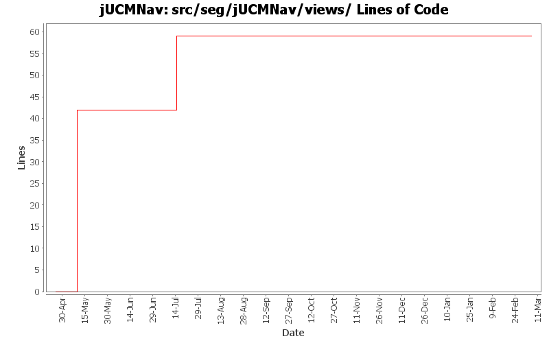

Summary Period: 2005-04-25 to 2006-03-06
[root]/src/seg/jUCMNav/views
 compositeList
(4 files, 333 lines)
compositeList
(4 files, 333 lines)
 elements
(2 files, 864 lines)
elements
(2 files, 864 lines)
 evaluationScenario
(0 files, 0 lines)
evaluationScenario
(0 files, 0 lines)
 outline
(2 files, 351 lines)
outline
(2 files, 351 lines)
 preferences
(4 files, 317 lines)
preferences
(4 files, 317 lines)
 property
(10 files, 1909 lines)
property
(10 files, 1909 lines)
 descriptors
(6 files, 350 lines)
descriptors
(6 files, 350 lines)
 resp
(0 files, 0 lines)
resp
(0 files, 0 lines)
 strategies
(1 files, 331 lines)
strategies
(1 files, 331 lines)
 stub
(5 files, 1743 lines)
stub
(5 files, 1743 lines)
 urnlinks
(1 files, 401 lines)
urnlinks
(1 files, 401 lines)
 wizards
(6 files, 909 lines)
wizards
(6 files, 909 lines)
 importexport
(8 files, 2207 lines)
importexport
(8 files, 2207 lines)

Total Lines Of Code:
59 (2006-03-31 18:01)
| Author | Changes | Lines of Code | Lines per Change |
|---|---|---|---|
| Totals | 47 (100.0%) | 59 (100.0%) | 1.2 |
| etremblay | 40 (85.1%) | 42 (71.2%) | 1.0 |
| jkealey | 6 (12.8%) | 17 (28.8%) | 2.8 |
| jfroy | 1 (2.1%) | 0 (0.0%) | 0.0 |
Externalize String
0 lines of code changed in:
bug 408: new perspective; it is opened with new file; created default view/new wizard shortcuts
0 lines of code changed in:
added headers + package.html for all files in the seg.jUCMNav.views.* package. did not clean the files
17 lines of code changed in:
Pretty big commit!
Refactored the composite list control to be useable with something else than the responsibility list.
The resp view will now refresh properly when you add/remove/change a responsibility in the map.
The rep view will change when you change the tab in the editor (won't change if you use the outline). Now anything can listen to know when the tab changes.
0 lines of code changed in:
Added a really basic Responsibility View. Right now you can select each responsibility but the selection synchronization is not there yet.
If you change info of responsibilities it'll show in the list, but if you add new ones it won't for the moment...
0 lines of code changed in:
New dialog when you double click on a dynamic stub to select the map you want to open.
0 lines of code changed in:
Can now delete in/out Bindings. The StubBindingDialog is now much more professionnal looking. Dynamic stubs are now functionnal in the dialog.
0 lines of code changed in:
Jipi, Lesson #1: Test before commiting :) The application was not even loading after you renamed messages.properties. :)
messages_en updated in Messages.java...
0 lines of code changed in:
Renamed some command.
DeletePluginCommand is working.
When you check the checkbox of a map in the maplist of StubBindingsDialog it create a Plugin, if you unselect it, it deletes it.
The AddBindings section just edit the first plugin right now. But you can now create more than one PluginBinding with a dynamic stub.
0 lines of code changed in:
Internationalization of all the strings.
0 lines of code changed in:
The map containing the stub now don't appear in the table of StubBindingsDialog...
0 lines of code changed in:
fixed typo that has been there from the beginning - 1100 lines of code in this file eh?
0 lines of code changed in:
Actions now have icons in menus. The icon will change for transmogrify depending if you change to OR or AND...
The StubBindingsDialog is now much more like I want it to look like. The commands seems to work and the undo redo buttons in the dialog are working. I'll find an other image for the disabled undo/redo.
0 lines of code changed in:
Now all actions done in the StubBindingsDialog are commands. They can be undone individually in the editor after, so that's bad! But it'll be fixed soon.
0 lines of code changed in:
- Changed the stub bindings view to be a dialog.
- Use the edit plugins action in the action menu on the stub or use the properties (the item Plugins) to open this dialog.
- There still a lot of bugs in the dialog... Specially if you expand/close the sections...
0 lines of code changed in:
Fixed a small bug with OutBindings. Changed the default sections that opens in the view after clicking on a stub.
0 lines of code changed in:
Can now add OutBindings. Work the same as InBindings.
0 lines of code changed in:
- Can now add InBindings from the stub bindings view.
- Changed the binding list from a Table to a Tree.
- Changed a lot of behaviors in the view.
- Adding bindings is still in an ealry prototype phase, use it at your own risk for the validity of your files.
0 lines of code changed in:
- Can now double click on static stub to open the associated map.
- To change the associated map of a static stub, select a stub and select a map from the list in the Connect Map section of the Stub Bindings view.
- This view is far from finished. It's more a prototype right now that will evolve to a final version. Eclipse Forms layouts are really not fun. The view currently only work for static stubs. The actions done when you add a plugin is not a command, so use the view at your own risk right now...
- New icons for dynamic stubs, path tool 24, bindings.
0 lines of code changed in:
StubBindingsView now do something interesting... Select a stub and the view will update itself with binding information from the stub.
Right now you can select a map from a List to bind the stub to this map. The list of bindings will update itself. The behavior is not working completly yet, but this will be implemented soon.
Note: Programming with eclipse forms without any graphical ediing software is really painfull!! :P
0 lines of code changed in:
(8 more)
Generated by StatCVS 0.2.4